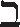

16.2 字符集与 HTTP
现在我们进入主题，开始研究网站国际化中最重要（且令人困惑）的方面——各国的字母表和它们的字符集编码。
Web 字符集标准很有些令人迷惑。由于必须阅读很多标准文档，其中术语复杂且不一致，再加上对外语不太熟悉，很多人首次尝试编写国际化的网站软件时，都被搞糊涂了。本节和下一节应该能让读者更容易地学会在 HTTP 中使用字符集。
16.2.1 字符集是把字符转换为二进制码的编码
HTTP 字符集的值说明如何把实体内容的二进制码转换为特定字母表中的字符。每个字符集标记都命名了一种把二进制码转换为字符的算法（反之亦然）。字符集标记在由 IANA 维护（参见 http://www.iana.org/assignments/character-sets）的 MIME 字符集注册机构进行了标准化。附录 H 中概述了其中的很多字符集。
下面的 Content-Type 首部告知接收者，传输的内容是一份 HTML 文件，用 charset 参数告知接收者使用 iso-8859-6 阿拉伯字符集的解码算法把内容中的二进制码转换为字符：
Content-Type: text/html; charset=iso-8859-6
iso-8859-6 的编码算法把 8 位值域映射为拉丁字母和阿拉伯字母，以及数字，标点和其他符号 1。例如，在图 16-1 中，突出显示的二进制码的值是 225，它在 iso-8859-6 中被映射到阿拉伯字母“FEH”（读音类似英语字母 F）。
1 与汉语、日语不同的是，阿拉伯语中只有 28 个字符。8 位空间有 256 个不同的值，足以容纳拉丁字符、阿拉伯字符以及其他符号。
图 16-1 charset 参数告知客户端如何把内容中的二进制码转换为字符
有些字符编码（比如 UTF-8 和 iso-2022-jp）更加复杂，它们是可变长（variable- length）编码，也就是说每个字符的位数都是可变的。这种类型的编码允许使用额外 的二进制位表示拥有大量字符的字母表（比如汉语和日语），仅用较少的二进制位来 表示标准的拉丁字符。
16.2.2 字符集和编码如何工作
现在我们来看看字符集和编码到底做了什么。
我们想把文档中的二进制码转换为字符以便显示在屏幕上。但由于有很多不同的字母表，也有很多不同的方法把字符编码成二进制码（这些方法各有优缺点），我们需要一种标准方法来描述并应用把二进制码转换为字符的解码算法。
把二进制码转换为字符要经过两个步骤，如图 16-2 所示。
图 16-2 HTTP 协议中的 charset 是字符编码方案和编码后字符集的组合
在图 16-2a 中，文档中的二进制码被转换成字符代码，它表示了特定编码字符集中某个特定编号的字符。在这个例子里，解码后的字符代码是数字编号 225。
在图 16-2b 中，字符代码用于从编码的字符集中选择特定的元素。在 iso-8859-6 中，值 225 对应阿拉伯字母“FEH”。在步骤 a 和 b 中使用的算法取决于 MIME 的 charset 标记。
国际化字符系统的关键目标是把语义（字母）和表示（图形化的显示形式）隔离开来。HTTP 只关心字符数据和相关语言及字符集标签的传输。字符形状的显示是由用户的图形显示软件（包括浏览器、操作系统、字体等）完成的，如图 16-2c 所示。
16.2.3 字符集不对，字符就不对
如果客户端使用了错误的字符集参数，客户端就会显示一些奇怪的错乱字符。假设浏览器从主体中获得值 225（二进制为 11100001）。
如果浏览器认为主体是用 iso-8859-1 西欧字符编码的，它将会显示带有重音符号的小写拉丁字母“a”：
如果浏览器使用 iso-8859-6 阿拉伯编码，它将会显示阿拉伯字母“FEH”：
如果浏览器使用 iso-8859-7 希腊编码，它将会显示小写的希腊字母“Alpha”：
如果浏览器使用 iso-8859-8 希伯来编码，它将会显示希伯来字母“BET”：

16.2.4 标准化的MIME charset值
特定的字符编码方案和特定的已编码字符集组合成一个 MIME 字符集（MIME charset）。HTTP 在 Content-Type 和 Accept-Charset 首部中使用标准化的 MIME charset 标记。MIME charset 的值都会在 IANA 注册。2 表 16-1 列出了文档和浏览器所使用的一些 MIME charset 编码方案。更完整的列表参见附录 H。
2 请从 http://www.iana.org/numbers.htm http://www.iana.org/numbers.htm获取注册的 charset 值的完整列表。
表16-1 MIME charset 编码标记
| MIME charset 值 | 描 述 |
|---|---|
| us-ascii | 这是个著名的字符编码，在 1968 年就已标准化，称为ANSI_X3.4-1968。它也称为ASCII，但最好还是加上“US”前缀，因为 ISO 646 中有某些国际化的变体，它们修改了一些字符。US-ASCII 把 7 位数值映射到 128 个字符上。最高位未使用 |
| iso-8859-1 | iso-8859-1 是对 ASCII 的 8 位扩展，以支持西欧的多种语言。它使用了最高位以包含更多西欧字符，而保持 ASCII 的编码部分（0 ～ 127）没有变。它也称为isolatin-1，或简称为 Latin1 |
| iso-8859-2 | 对 ASCII 扩展以包括中欧和东欧语言中的字符，包括捷克、波兰、罗马尼亚。它也称为 iso-latin-2 |
| iso-8859-5 | 对 ASCII 扩展以包括斯拉夫语字符，使用这些字符的语言包括俄语、塞尔维亚语和保加利亚语 |
| iso-8859-6 | 对 ASCII 扩展以包括阿拉伯语字符。因为阿拉伯语字符的显示形状会随它在单词中的位置而变化，阿拉伯语的显示引擎需要分析上下文来为每个字符生成正确的形状 |
| iso-8859-7 | 对 ASCII 扩展以包括现代希腊语字符。以前称为 ELOT-928 或 ECMA-118:1986 |
| iso-8859-8 | 对 ASCII 扩展以包括希伯来语和意第绪语（这两种语言都是犹太人所用的）的字符 |
| iso-8859-15 | 更新了 iso-8859-1，用遗漏的法语和芬兰语字母替换了一些不太常用的标点符号和分数符号，并用新的欧元符号替换国际货币符号。这种字符集简称为 Latin0，可能将来会替代 iso-8859-1，作为欧洲的首选默认字符集 |
| iso-2022-jp | iso-2022-jp 是在日语的电子邮件和网页内容中广泛使用的编码。它是一种变长编码方案，支持用单字节表示 ASCII 字符，但使用 3 字符的模态转义序列在 3 种日语字符集中切换 |
| euc-jp | euc-jp 是遵循 ISO 2022 的变长编码，它用显式的二进制码模式来标识每个字符，不需要模态及转义序列。它使用单字节、2 字节以及 3 字节的序列来标识多个日语字符集中的字符 |
| Shift_JIS | 该编码起初是由微软公司开发的，有时称为 SJIS 或 MS Kanji。出于保持历史兼容性方面的原因，它有点儿复杂，并且不能映射所有的字符，不过它还是用的很普遍 |
| koi8-r | KOI8-R 是为俄语设计的流行的 8 位因特网字符集编码，在 IETF RFC 1489 中定义。这些大写字母是 Code for Information Exchange, 8 bit, Russian（俄语 8 位信息交换代码）的首字母缩略形式 |
| utf-8 | UTF-8 是一种用来表示UCS（Unicode）的常用变长字符编码方案，UCS 的意思是 Universal Character Set of the world's characters（世界字符统一字符集）。 UTF-8 使用变长的编码来表示字符代码值，每个字符使用1 ～ 6 个字节。UTF-8 的主要特点之一就是保持对普通的 7 位 ASCII 文本的后向兼容性 |
| windows-1252 | 微软公司把它编码后的字符集称为 code page（代码页）。Windows 的代码页 1252（也称为 CP1252 或 WinLatin1）是对 iso-8859-1 的扩展 |
16.2.5 Content-Type首部和Charset首部以及META标志
Web 服务器通过在 Content-Type 首部中使用 charset 参数把 MIME 字符集标记发送给客户端：
Content-Type: text/html; charset=iso-2022-jp
如果没有显式地列出字符集，接收方可能就要设法从文档内容中推断出字符集。对于 HTML 内容来说，可以在描述 charset 的 <META HTTP-EQUIV="Content-Type"> 标记中找到字符集。
例 16-1 中展示了 HTML META 标记如何把字符集设置为日语编码 iso-2022-jp。如果文档不是 HTML 类型，或其中没有 META Content-Type 标记，软件可以设法扫描实际的文本，看看能否找出语言和编码的常见模式，以此推断字符编码。
例 16-1 可以在 HTML META 标记中规定字符编码
<HEAD>
<META HTTP-EQUIV="Content-Type" CONTENT="text/html; charset=iso-2022-jp">
<META LANG="jp">
<TITLE>A Japanese Document</TITLE>
</HEAD>
<BODY>
...
如果客户端无法推断出字符编码，就假定使用的是 iso-8859-1。
16.2.6 Accept-Charset首部
在过去的几十年间，人们开发了成千上万种字符编解码方法。大多数客户端不可能支持所有这些不同的字符编码和映射系统。
HTTP 客户端可以使用 Accept-Charset 请求首部来明确告知服务器它支持哪些字符系统。Accept-Charset 首部的值列出了客户端支持的字符编码方案。例如，下面的 HTTP 请求首部表明，客户端接受西欧字符系统 iso-8859-1 和 UTF-8 变长的 Unicode 兼容系统。服务器可以随便选择这两种字符编码方案之一来返回内容。
Accept-Charset: iso-8859-1, utf-8
注意，没有 Content-Charset 这样的响应首部和 Accept-Charset 请求首部匹配。为了和 MIME 标准兼容，响应的字符集是由服务器通过 Content-Type 响应首部的 charset 参数带回来的。不对称真是太糟了，不过需要的信息倒是都有了。